天猫数字员工：研发暗物质与AI Native组织协作
来源：微信公众号 归档日期：2026-10-21 抓取状态：成功 原文字符：19965｜配图：29 张
摘要速览
- 天猫「数字员工」端到端交付架构：解决研发协作中信息传递失真、等待检索耗时、隐性知识流失；区别于传统 AI 编码工具，以钉钉群为入口，产品/开发/测试共享同一份需求上下文，贯穿 PRD 到发布复盘全流程。「协作+资产」两大解法把散落业务认知沉淀为可复用资产，推动组织从职能分工转向任务驱动，走向异步化大规模协作，让 AI 成为全程在场的同事而非工具。
核心内容
（待补充）
可执行启发
（待补充）
我的想法
（待补充）
原文沉淀
目录

本文探讨了天猫技术构建的 AI 端到端交付架构——“数字员工”，旨在解决 AI 时代研发协作中信息传递失真、等待检索耗时及隐性知识流失等痛点。区别于传统AI编码工具，数字员工以钉钉群为入口，与产品、开发、测试等角色共享同一份需求上下文，贯穿从 PRD 到发布复盘的全流程。文章提出通过“协作”与“资产”两大核心解法，将散落的业务认知沉淀为可复用资产，推动组织协作从职能分工向任务驱动演进，最终实现异步化的大规模协作，让 AI 真正成为全程在场的同事而非单纯的工具。

前言
天猫技术正在建设统一的 AI 端到端交付架构：数字员工提供统一入口与运行时，驻进需求群承接交付；各业务域按需装配并持续沉淀自己的知识、技能与子 Agent。它与产品、前端、后端、测试共享上下文，接需求、写方案、调度 Agent、跟进交付，像一位全程在场的同事。目前已经在天猫技术的所有业务线进行落地推广，月均活跃需求交付100+。
区别于一般 AI 编码工具的两个核心视角——协作：与所有角色共享同一份上下文，让协作重新连起来，而不是被 AI 切碎；资产：把散在人脑与聊天记录里的业务认知，从组织维度沉淀成可复用的资产，越用越厚。 本文为此系列第一篇内容。
数字员工以钉钉为协作入口。每条需求对应一个场景群，产品、设计、开发、测试与它共享同一份需求上下文；从 PRD、设计稿和技术方案，到编码、测试、发布与复盘，产物都回到群里。团队不用更换协作工具，@ 它即可发起任务，私聊也能使用同一套能力。下图从一个入口和四个协作切面，快速展示它如何围绕同一份需求上下文参与理解与推进、方案判断、执行交付与状态学习；这些动作按事件触发，可以回退，也会反复发生：
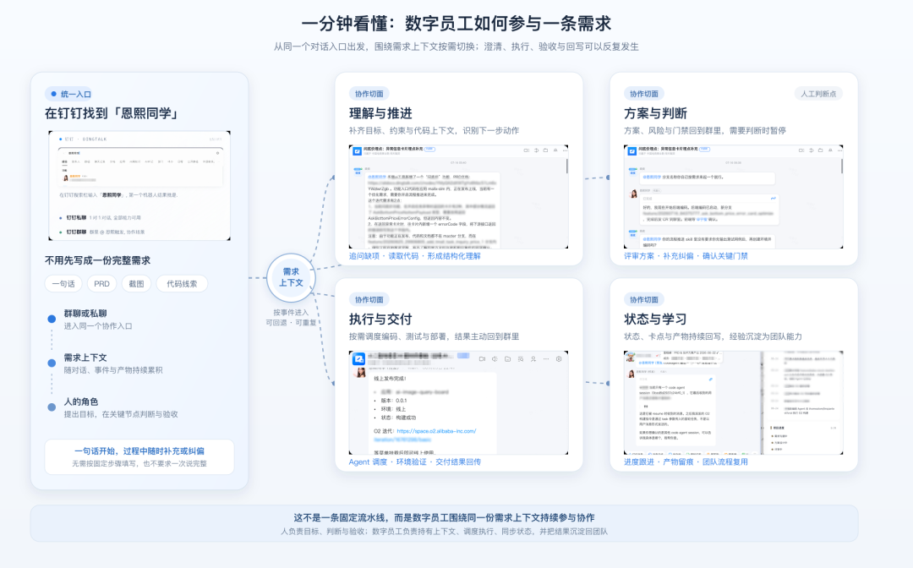
同一个对话入口，共享一份需求上下文；理解推进、方案判断、执行交付、状态学习四个切面按需进入，不是一条固定流水线
一百年前发生过一模一样的事。美国工厂把蒸汽机换成电动机，所有人以为效率会飞涨，结果三十年没什么起色，直到 1920 年代，有人不再换引擎，而是围绕电机把整条流水线、车间动线重组了一遍，效率才真正起飞。
今天，每个工程师都装上了 AI。我们还在那段"头三十年"里：缺的不是更快的引擎，而是那一次围绕新动力的重组。这次重组该怎么做，我们也没有标准答案——「天猫数字员工」这个系列，记录的是我们在天猫的一段探索。本篇（协作篇）把企业研发协同里刨根问底挖到的真实痛点讲透，给出我们对 AI Native 组织协作方式的思考；后续各篇讲交付实践、资产体系与主动协作。
赶时间的电梯——本文一句话：研发提效的瓶颈往往不在编码，而在协作与知识的沉淀；我们的探索，是让一位数字员工驻进需求群，与整个团队共享同一份上下文。
- 想看它长什么样 → 数字员工
- 想看组织如何逐级升级协作方式 → 三级演进
- 想看知识与决策如何沉淀复用 → 上下文层
- 只关心解法的话，前面的问题分析（2-4 章）可以跳过，不影响主线理解
AI Native 研发，
解的不再是编码问题▐ 2.1 换了引擎，没重组协作模式
编码助手之后，下一代 AI 研发产品会长成什么样？市面上答案很多：Codex 这类桌面会话产品，Slack AI 这类进 IM 的协作产品。但模型本身每半年变强一次，很多今天靠工程手段拼出来的能力，明天就是模型的原生本事——工具层的领先注定短命。站在研发协同的视角，真正值得做的是什么？
上面的六步路径只是入口。具体的产品形态、使用路径与工程实现，实践篇会完整展开；本文先把问题讲透：为什么协作是真正的瓶颈，以及组织该怎么一步步走过去。
▐ 2.2 个体快了，组织没快
为什么解法要长成"同事"的样子，而不是一个更快的编码工具？"让程序员写代码更快"这件事，今天已经被解决得相当好，但组织的交付速度并没有随之快十倍。这里藏着两个不等式：用 AI 工具 ≠ 个人提效，个人提效 ≠ 组织提效。原因不复杂：一条需求从来不是一个人干完的，写代码只占两成时间，其余八成消耗在角色之间的交接、等待和反复对齐上；工具优化的是那两成，整体周期由最慢的那块板决定。业界数据都指向同一件事：AI 能把"从开发到提交 PR"的时间最多缩短 58%，但 AI 生成的 PR 在评审队列里的等待时间是普通 PR 的 4.6 倍；NBER 的跨国高管调研则显示，69% 的企业已在使用 AI，近九成却表示过去三年生产力未受影响，全体企业的平均提升估算只有约 0.29%。
两个不等式指向同一个事实：瓶颈从来不在个体。所以，靠给每个人发一套工具的"超级个体"是推不开的；十倍效率的解也不在"更快地写代码"，而在两件事上：协作，与资产。而协作的目标形态，一定是异步化的大规模协作。为什么、怎么做到，讲到第三级时算这笔账。落到组织上，就是全文的两条结论：研发角色在加速向全栈迁移——越来越多人要扛起端到端责任与跨栈判断；AI 时代的组织协作，正在从职能分工走向任务驱动。 后面全是推导。
那八成看不见的时间，我们叫它暗物质：编码是亮的，能算行数、能算采纳率；协同是暗的，占大头却从不被度量。拆开看，一半是多人协同中的信息摩擦：传递摩擦（传丢、传歪）和获取摩擦（在等、在找）；另一半是长期的隐性知识：默契和决策，沉在人身上、从不进系统。接下来两章先把这四种摩擦讲透，再逐一展开协作与资产两个解法。
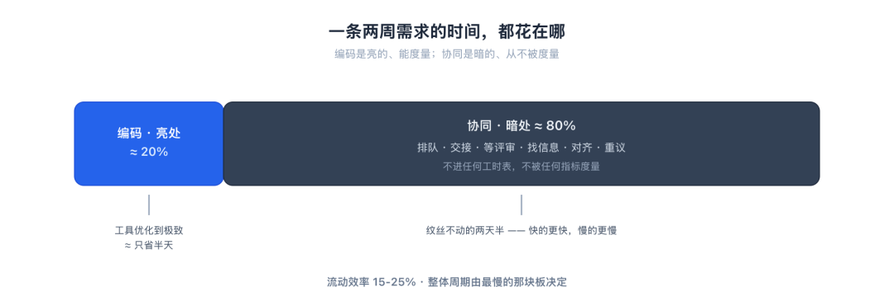
工具拼命优化亮处两成，暗处八成从不被度量
多人协同的信息摩擦：
传丢、传歪、在等、在找
这一半摩擦困在当下、角色与角色之间：信息在传递中丢了、歪了；或者你需要的输入获取不到，要么在等，要么在找。（后文的场景对话由真实工作事件整理重演，时间与轮次为当时的典型量级。）
▐ 3.1 传递摩擦：信息传丢了，也传歪了
先看"传丢"，即同步摩擦。一条需求 PRD → 设计 → 前端 → 后端 → 测试逐级搬运，每过一手，意图就漏掉一层。产品在需求会上讲了三条隐含约束，到测试写用例时只剩一条。更贵的是变更放大：源头 PRD 改一个字段，群里的角色一多，两两之间的沟通线成倍地多——每条都要重新走、每条都可能漏。
中后台尤其重灾。我们摸排整条交付链路，耗时最长的两段恰恰是需求生成和跨团队沟通——没有一段在键盘上。减少这种摩擦最直接的办法，是让一个人负责更多环节：经手的人少了，传递损耗和沟通线就跟着少——这也是我们推全栈的根本原因。变更放大的实际样子，见下图左半的一段群聊。
传递还有另一半——"传歪"，即语义摩擦：同一个事物，各角色各用各的名字。前端技术方案里的 cursor 和服务端契约里的 nextToken，指的是同一个分页游标；上一期没出问题，只是因为当时的对接人在网关层做了一层字段映射，而这层映射没有留下任何记录，人一转岗就失传了。语义摩擦比同步摩擦更难防：信息传丢，链路会停下来等人补齐；语义传歪，双方都以为自己是对的，要到联调甚至线上才会暴露。
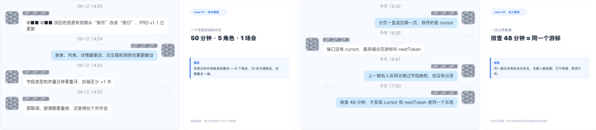
左·传丢：风控改一个字段——50 分钟、5 个角色、一场会；
右·传歪：排查 48 分钟，两个词指的是同一个游标（点开看大图）
▐ 3.2 获取摩擦：要么在等，要么在找
先说"等"，即等待摩擦。需求挂着等接口、等 PRD 确认、等审批、等 review——这些队列看不见、没人管，也从没人度量。AI 来了反而更刺眼：写得快、并行多，评审和审批的带宽没变，MR 在队列里越趴越久。时间没花在干，花在等。
再说"找"，即检索摩擦。改哪个页面在哪个仓库、三份同名文档哪份是最终版、当年的口径谁还记得？知识散在钉钉、PRD、代码和人脑的缝隙里，没有单一来源。找信息的隐性成本，比写代码本身还高。
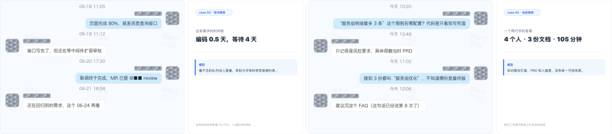
左·在等：代码只写了半天，剩下四天在等审批、等环境、等 review；
右·在找：一个两行字的答案，穿过四个人、三份同名文档、一小时四十五分钟
长期的隐性知识：
默契随人走，决策没人记
挖到这以为齐了，后来发现还有两种更贵的，困在时间里：本该越做越快，却每次从头。
▐ 4.1 默契摩擦：工作流沉在个人脑里
业务里到处是隐性工作流：某类需求走哪条灰度、命名遵什么约定，老搭档之间早磨出默契，同类需求复制极快。但这些从不进文档，只活在具体的搭档关系里，人一动默契就蒸发。同一类需求、不同搭档的两段群聊：老搭档一句"老规矩"、一句"老三样"，两条消息定案；换了新同学，灰度怎么灰、开关配哪、白名单找谁加，二十六条消息还没走到排期。那两个字的"老三样"，值一份从没人写下来的 SOP。两段聊天记录见下图左半。
▐ 4.2 决策摩擦：为什么丢失
当初为何这么设计没人记得，新人反复挑战旧决策、重开会重议："是什么"还在代码里跑着，"为什么"已经没人说得出。这张记录是它的标本：新人把"资质图片最多 5 张"放宽到 20 张，当晚 OSS 带宽告警回滚——5 张是两年前同步审核链路时代定的，"没写，口头定的，人也不在了"；如今审核早已异步，这条限制可能根本不需要，但没人敢动，得先考古。
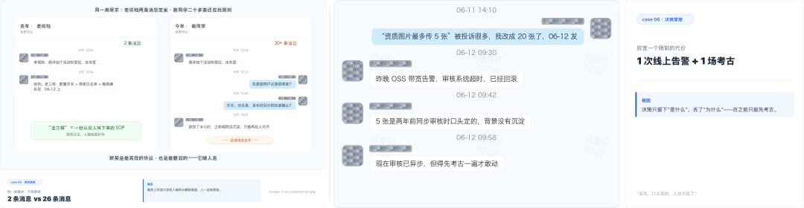
左·默契：2 条消息 vs 26 条——默契是最高效的协议，也是最脆弱的，它随人走；
右·决策：限制还在跑，理由已失传——动它之前，先考古

病根与解法：
给隐性上下文一个载体
▐ 5.1 病根：隐性上下文靠人兜底，AI 一来就现形****
四种摩擦摆齐，根浮出来：隐性上下文没有载体：协同侧是没传到，知识侧是没留下。研发系统里有大量上下文从来没被写成机器可读、可查询、可复用的形态：它在某个人脑子里、在一次没人记的口头确认里、在三个互不打通的系统缝隙里。这套按角色切分的结构当初就是为人设计的，人的认知带宽有限、注意力稀缺；到了 AI 时代，同一个结构既卡人也卡 AI。
过去这些缺口一直靠人兜底：PRD 不全、规则口口相传，开个会、问一句、跑预发试一下就糊过去。人既是协同的瓶颈，也是协同的兜底，这笔隐性税自然到没人当成工作。AI 接管执行后，这一面翻转：它不会猜、不会找人打听，要的是结构化、可查询的信息，于是工程师反成 AI 与系统之间的"人肉中间件"，被人兜底的隐性成本第一次以瓶颈形式暴露。集团内有团队测算过这组落差：写代码时间占比从 30% 掉到 5%、与 Agent 对话升到 60%，纯编码提速十倍，端到端却只快两三倍——差的那部分全卡在暗处，模型越强差距越大。AI Native 越往前推，先现形的不是它多能干，而是你的上下文有多不结构化：
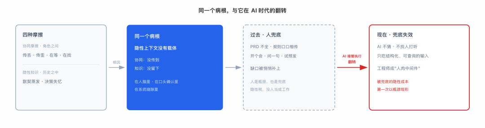
四种摩擦同一个根：没有载体；人兜底的隐性税，在 AI 接管执行后第一次以瓶颈现形
上半场到此收官。每种症状各记一笔账：50 分钟的字段涟漪、48 分钟的双词排查、四天的等待、105 分钟的检索、二十六条消息的重新磨合、一次回滚换来的考古。记住这六个数字，下半场逐笔来还。
▐ 5.2 数字员工：围绕协同与资产长出来的能力
回头看这四种摩擦，还有一层共性：它们都不是工具问题，是协作关系问题。信息沿协作路径损耗，认知随协作关系断裂；工具再快，信息还是走那些路径，认知还是沉不下来。所以解法必须动协作关系本身：信息走什么路径、认知沉在哪里、谁跟谁怎么连。
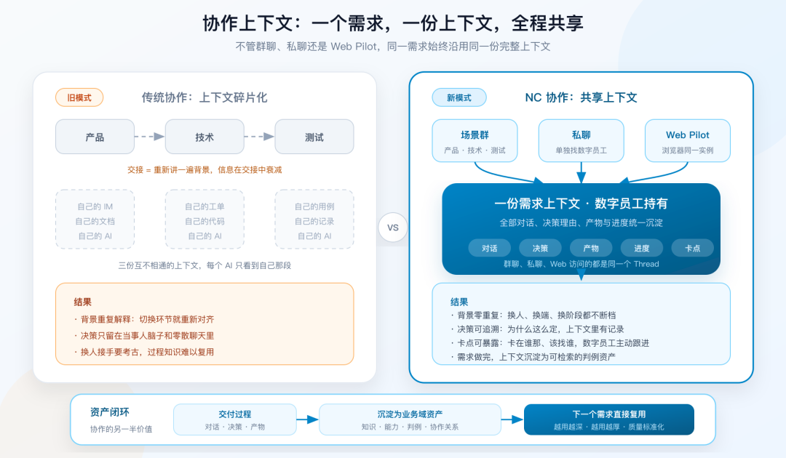
左：每人抱着自己的 IM、文档和 AI 会话，三份互不相通的上下文；
右：数字员工持有同一份需求上下文
新形态一句话就能说完：数字员工驻群，与所有角色共享同一份上下文；人通过卡片异步参与，不盯群、不蹲会；卡点由它主动暴露、主动催。传丢、传歪、在等、在找，在这套"驻群 + 异步"的形态里被逐项压下去，机制和真实运行记录下一章按三级展开；剩下默契和决策这两类隐性知识，要沉成资产才解得掉，资产那一半后面单独讲。先正式认识这位一直在场的主角。
它不是一个聊天机器人，而是认领需求、产出交付物、汇报进度的数字员工：私聊按员工身份进入个人沙箱，场景群按群身份进入共享沙箱，群内成员共享同一个数字员工和同一份需求上下文。交付物也不只是代码：PRD、技术方案、交互流程图、数据口径、部署产物，都是它的产出。钉钉与 Web 工作台可以接续同一条会话，必须保留的会话、记忆和任务状态独立持久化，工作容器重建后仍可恢复。（工程上怎么造，实践篇拆。）
数字员工本体的能力清单其实很短：学习、记忆、总结，加上对文档与代码的基础检索。其余能力都是按业务域装载和定制出来的——对着前面的摩擦、沿"协同与资产"两条线生长。下表只是当前常用的一部分：
| 能力 | 它具体做什么 | 解决什么问题 |
|---|---|---|
| 需求收口与澄清 | 一句话拉群绑域；结合域全景知识对 PRD 多轮澄清，产出技术方案 | 收传递摩擦——对齐前置到编码之前，术语在收口时统一 |
| 进度跟进与变更拉齐 | 群看板自动更新；卡点主动上报、到点催办；PRD 一改自动 diff、定向 @ 受影响的人 | 收获取（等）与传递——需求不空转，变更不逐级人传 |
| 即问即答 | 群里 @ 它即答业务术语；自然语言查数 | 收获取摩擦（找）——10 秒替代 105 分钟 |
| 异步编码交付 | 派子 Agent：clone → 改 → 测 → 提 MR；部署发布 | 执行本体——编码节点站在巨人肩上 |
| 资产的装载与沉淀 | 一句"我属于家装"，加载该域知识、规则与专属 Skill；产物、事件、卡点归档留判例 | 对着隐性知识——换域不抓瞎，越用越厚 |
前三行对着协同中的传递与获取，末行对着默契与决策这两类隐性知识，中间的编码交付是执行本体——开头立的"解在协作与资产"，这张表就是它在产品上的落法。清单随装载持续生长：群里丢个链接让它"学一下"，团队的交付流程就装成它的 Skill（现学现用的实录，实践篇会展开）。
这张表跑起来的样子，从真实群聊截三个瞬间就能看到：方案被批"只有接口层面变化"后按业务逻辑分域重写；任务干完以步骤表回报、群内直接验收；发布成功主动通报版本与地址：
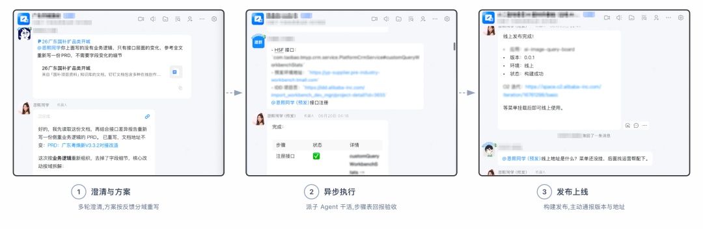
三个真实瞬间：方案按反馈分域重写 → 任务步骤表回报 → 发布主动通报——人只在确认与验收两处出现
规模上它已经不是演示品：十余个业务域的几十条真实需求已经跑在它身上，每张卡片都带阶段标签，你永远知道自己在跟谁说话。边界也清楚：它只在被 @ 或私聊时应答，不会插进人的对话；需求上下文的记账，只发生在为这条需求建的场景群里——把它拉进群，就是授权它记这本账。场景群之外的普通群，它不进也不听。一句话：它不要求任何人改变工作习惯：你还是在钉钉里说话，只是群里多了一个全程在场、随叫随到、永不忘事的同事。工具在手，组织怎么围绕它升级，才是下一章的正题。
协作这一半：
从人人用 AI，到数字员工主导
先把梯子外的起点说清。没有数字员工之前，"人人自己用 AI"的状态就是开头那两个不等式的现场，快手千人团队用数据踩实了它们：用 AI 工具 ≠ 个人提效：代码生成率从 17% 涨到 30%，但只有不到 10% 的工程师真正改变了工作方式；个人提效 ≠ 组织提效：个体快了，交付周期纹丝没动。人机协作本身还成了新负担：人工补位、上下文对齐、验证纠偏、边界判断。
数字员工进场之后，协作才开始爬梯子。三级都以数字员工为底座，区别只在人和它怎么分工：它从上下文中枢，到被指挥的执行者，再到自主推进的主导者。升级的扳机一半在组织（垂直化协同、岗位边界全栈化到什么程度），一半在底座（资产沉淀多厚、模型的长任务能力多强）。每升一级，多收掉一批暗物质；三级不是谁好谁坏，是成熟一块、升一块。这架梯子也不是我们独创：微软 2026 年度工作趋势报告把同一条路画成四段：人产出 AI 辅助、人定意图 AI 出稿、人写规格后整任务交给 AI、多 agent 并行跑流程而异常才找人——和我们踩出来的三级，几乎逐级重合。
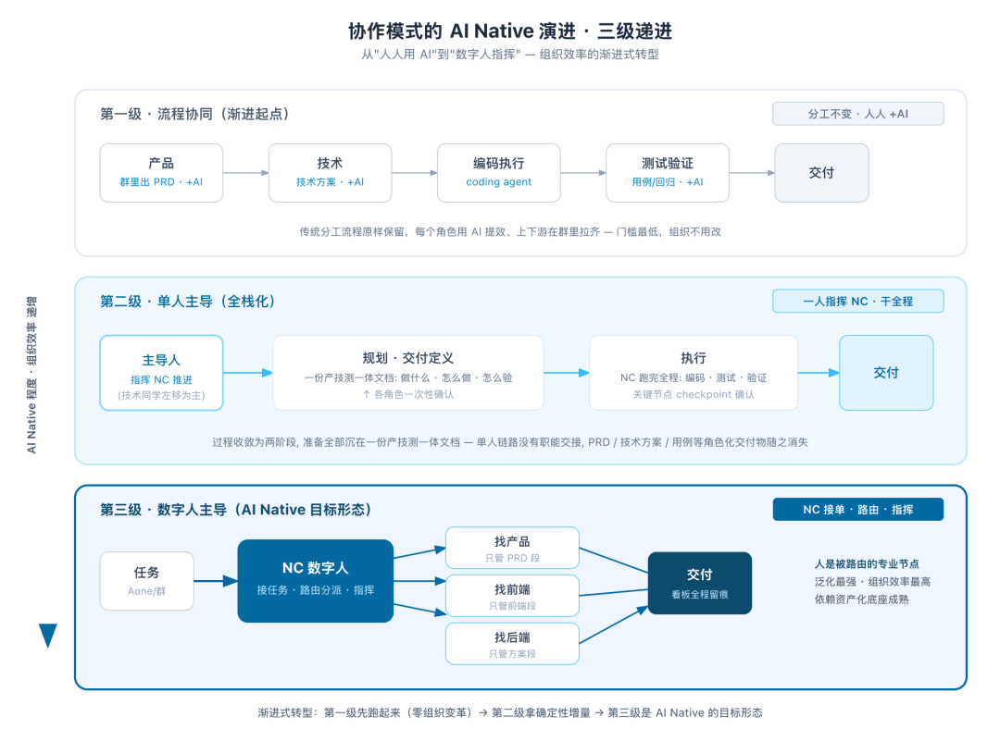
三级都以数字员工为底座：流程协同 → 单人主导 → 数字员工主导
▐ 6.1 第一级 · 流程协同：分工不变，上下文先打通
这是接入数字员工后的默认起点：各角色照原有分工干自己的段——产品出 PRD、技术出方案、测试管验证，组织一点不用改。变化发生在协同层：数字员工驻群的那套协作形态，在这一级过成了日常。下面全是真实运行记录。
听全场的日常。 群里问一句"服务组明细为什么最多 3 条"，十秒拿到答案，附当年的 PRD 链接和定规则的原因。原来这要穿过四个人、三份同名文档、一小时四十五分钟。完整的链路是三步：群里照常讨论，邀谁评审、谁跟进交易、找谁做评估，它全程在场记账；丢进群的现状文档，@ 它一句"读一下"，要点汇总回群；听完收完，它产出同一份产技方案：需求背景、每条需求的改动端与涉及接口、待确认项，连"哪个接口要新增入参、要同步给后端排期"都写在明处。从这一刻起，所有角色基于同一份交付产物向后推进。那 50 分钟的连锁卷入和 48 分钟的双词排查，在这套流程里都不会发生。对齐从"约个会全员坐一小时"，变成"开发开始前，已经对齐"：
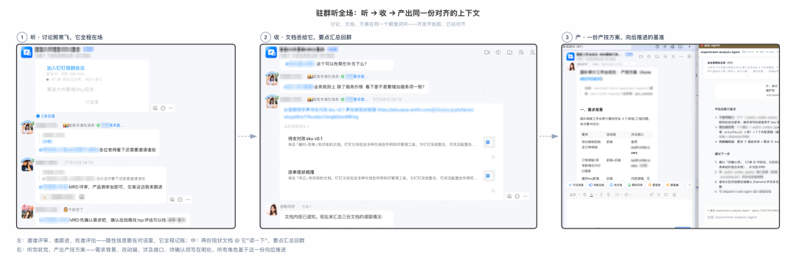
听：讨论照常飞，它全程在场；收：文档丢给它，要点汇总回群；
产：一份产技方案落地，所有角色基于它向后推进
异步的日常。 人通过卡片异步参与四类节点：需求通知、进度播报、异常预警（超时、死循环、构建失败自动升级给人）、验收协作。不用盯进度、不用蹲群；要深度交互就点"查看详情"进全屏页，群里只留进度卡片，群是协作现场，详情页是个人工作台。方向也反过来——它干完活主动来找你。它能 @ 对人，是因为一直在认识这个群：从群聊与协作痕迹里自动识别谁负责什么、进展到哪个里程碑、产物挂在哪，没有一样靠人登记。所以部署完成的那一刻，它 @ 到该验收的两个人：预发地址、生效的改动点、后端接口清单一并带到，一句"刷新验证一下"把人拉回来收尾。人不盯它，它来找人：
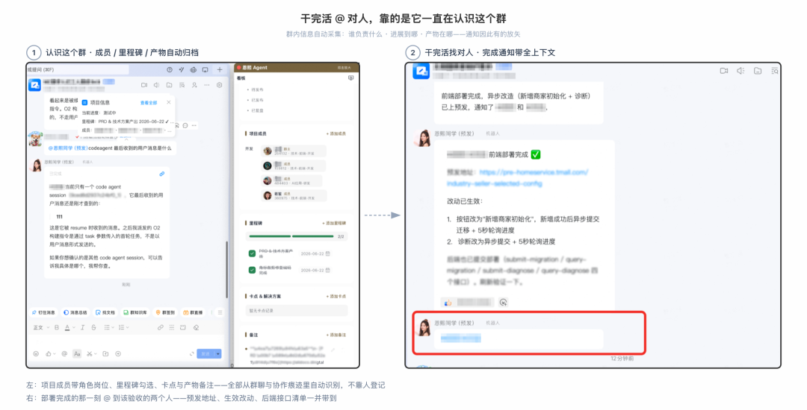
它对群的认识全部自动采集；通知因此有的放矢，被 @ 即可动手验收
卡点同样藏不住：卡住主动上报，到点主动催（催谁的备选，背后是"谁懂什么"的路由表，讲到第三级时展开）；看板上节点、卡点、产物全程留痕，项目管理不是追着人问出来的，是在过程中自然长出来的。那条"编码半天等四天"的需求在这一级是另一个走法：审批超 24 小时自动上报并催办，MR 挂满半天到点 @reviewer——四条日期分隔线，缩回编码那半天本身。顺带，找信息也不再占用任何人：丢一张页面截图问"改哪个仓库"，页面、工作台、核心实体秒回：
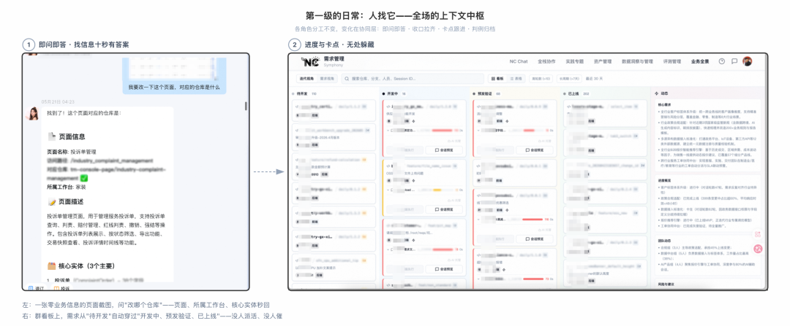
找信息和盯进度，从此不占用任何人（点开看大图）
这套日常背后有个分层原则：人擅长松散、模糊、创造性的沟通，Agent 擅长结构化、确定性、可重复的执行——把两层分开。需要人对齐的事（意图澄清、方案决策）前置消化、决策冻结，不让协作摩擦渗透进 Agent 的执行链路。快手主站的千人团队在 GIAC 2026 分享过同一个收敛：AI 越快，人与人的协作摩擦越明显，人机协作本身也成了新的隐性成本，解法同样是协作与执行分层，殊途同归。
这一级的边界也清楚：需求的串联和推进仍靠各角色接力，协作路径的长度没变、跨段交接的次数没减，隐性知识的沉淀才刚起步。这一级里，人找它——它是全场的上下文中枢。眼下十余个业务域的几十条需求，大多数运行在这一级。
▐ 6.2 第二级 · 单人主导：超级个体的落地形态
随着组织走向垂直化协同、岗位边界全栈化，一个人对一块业务域全面负责（产品+技术+测试）变得可行，协作就升到第二级：一人指挥数字员工干全程。规划段把"做什么、怎么做、怎么验"沉进一份产技测一体的文档，决策冻结；执行段数字员工跑完编码、测试、验证，人只在关键节点 checkpoint。单人链路几乎不再有职能交接，PRD、技术方案、用例这些角色化交付物合而为一，传递摩擦与"等"被大幅压缩。
这个"全程"具体包括哪些环节，见下图：
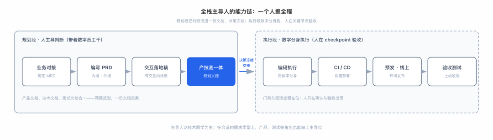
规划段四步合成一份产技测一体文档、决策冻结；执行段数字员工接棒，人只在验收出现
这个主导位天然更适合技术同学：全栈工程师对方案、代码、质量的判断链最完整，是第二级的主力形态。它也不排他——在接口现成、以组装为主的需求上，产品等角色带着数字员工同样能跑通端到端，下面的 case 就是一例。
这正是集团在推的"超级个体"的一种落地形态：超级个体不是一个人配一堆工具单打独斗，而是一个高判断力的人指挥数字员工干完全程，个体的上限被协作底座垫高了。这种模式对主导人的要求也非常高：一个人要同时握住产品判断、技术方案、质量验收，能力和综合素质的门槛远超单一职能岗位；对现有的组织形态也是挑战——岗位怎么设、绩效怎么评、梯队怎么培养，都要跟着变。
接口现成、只差上层组装的那类试点需求，就是产品带着数字员工端到端拿下的（具体交付路径与系统实现，实践篇展开）。一条跑完全程的真实 case 长这样：整条需求从头到尾，群里只有一位产品经理和数字员工。产品经理一句"把最新产物和方案更新进 PRD、技术方案、设计稿"，它回来时三份文档已全部更新完，还顺手生成了一份需求全过程回顾；再问一句"发布到线上了吗"，它没有直接动手，而是先摆出两道确认——线上依赖是否就绪、发布流程是否合规——确认后才触发构建。需求澄清、方案设计、产物维护、发布把关，过去分属四个角色的活，现在是一个人对一个数字员工的对话。这就是全栈化的角色，以协作的方式驱动的端到端交付：
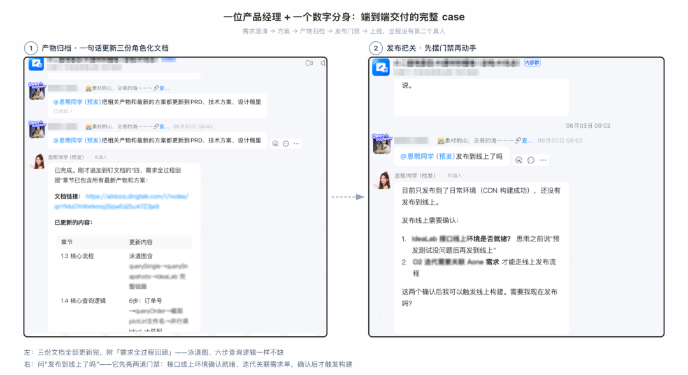
过去分属四个角色的活，现在是一个人对一个数字员工的对话（点开看大图）
具体的挑战也直白：单点依赖，主导人的全栈水平就是上限，不少跨域需求啃不动；生产关系没跟上，干得越全，越没人知道该给你打几分；质量方差，解法是交付与守护分层（"功能 Owner"交付、架构师守门），这套机制也还在试点里磨。这一级里，人指挥它——交接大幅减少，但串联流程的还是人。
▐ 6.3 第三级 · 数字员工主导：不再是人找 AI，是 AI 来找人
再往上，先交代真实位置：今天的交付主要跑在第一、二级，第三级还在探索——靠的就是本节要讲的协作资产。第三级的方向是翻转：前两级里人找它、人指挥它；到第三级，它来找人——依托资产自主推进，推进到信息确认不了的地方，由它判断该打扰谁，人只在被路由到的判断力时刻异步介入。组织意义上，这是最小单元的更换：从"人 + 长期关系网"变成"任务 + 上下文 + 权限 + 工具"——人不再是流程的串联者，而是被路由的专业节点，协作从"职能分工"走向"任务驱动"。这笔账很直白：一个人同步盯三五条需求就到顶了，agent 可以并行推进几十条（OpenAI 对 Codex 重度用户的测量印证了这个量级的并发差距）；十倍效率的最终卡点在人，解法只有一个方向——异步化的大规模协作，人把有限的带宽全部花在判断上。
它自主推进时走一条升级链：先查知识资产，能自答就不打扰任何人；再查判例，看类似的事当年怎么走；都确认不了，才到最难的一步——该打扰谁。打扰是组织里最贵的稀缺资源：人找人有社交常识兜底，agent 找人只能靠数据，否则只剩乱枪 @ 全群、或把所有问题升级给同一个 owner。我们把这一层做成了协作资产：从文档编辑、需求流转、群聊应答等真实痕迹里，提炼出"人 × 业务概念 × 证据"的画像——谁最熟这个概念、什么类型的问题该找谁、此刻找不找得到。这一层过去几乎空白，现在有第一版了：二十多人的画像墙、上万条可回查证据；问一句"浙江以旧换新专项资金的口径找谁"，秒级命中概念、候选人按证据强度排序、每条带原文理由——而这条查询的调用方，是数字员工自己。
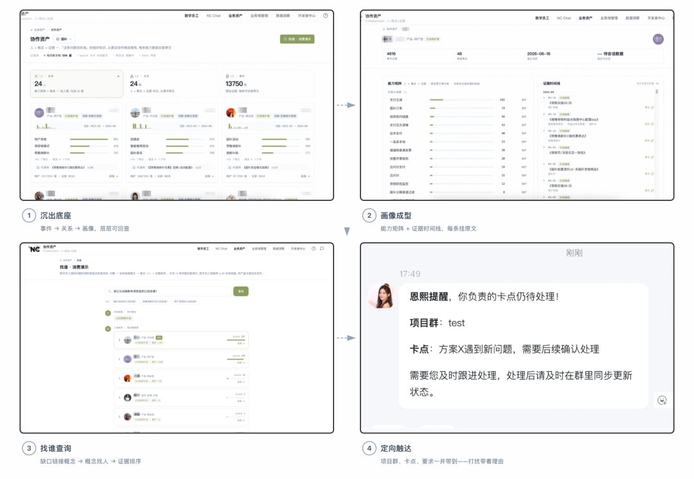
事件沉成画像，画像支撑查询，落到定向触达——每一次打扰都带着理由
人的参与度在下降，但价值密度在上升。一项被业界反复转引的测量（二手来源，量级供参考）显示：AI 让代码产量涨了约 180%，真正进入生产的只涨约 30%，差额全靠人的判断在填。人被找到的每一次，都是资产覆盖不了的高判断力时刻：拍板、例外、验收。专家不再需要驻群盯着，而是被精准调用；每一次被调用又产生新的事件，画像更准、下次路由更准。人参与 loop 的每一次，都在训练组织自己的路由表。剩下的挑战依然硬：组织要自上而下拉通、管理层先共识；AI 派的活人愿不愿接、验证怎么规模化；自主半径越大爆破半径越大，门禁、回滚、升级人工的机制必须先于放权到位。第三级今天仍在探索途中，但它的底座，正在一块块变成实物。
三级摆在一起，权衡一目了然：
| 维度 | 第一级 流程协同 | 第二级 单人主导（超级个体） | 第三级 数字员工主导 |
|---|---|---|---|
| 人与数字员工的分工 | 人找它：上下文中枢 | 人指挥它：全程执行者 | 它找人：自主推进者 |
| 升级扳机 | 接入即用 | 组织垂直化、岗位全栈化 | 资产底座成熟 + 可持续执行长任务的模型能力 |
| 压缩的摩擦 | 传递/获取压掉大半 | 职能交接大幅减少 | 四种摩擦显著压缩 + 跨团队路由 |
| 今天的位置 | 几十条需求的主力形态 | 试点中 | 底座第一版已落地，前奏已现 |
路线因此清晰：同一个团队里，简单域先升到二、复杂域先停在一。这不是三选一的产品形态，是同一位数字员工陪着组织走的三个阶段。
沿这条路线走到底，开头放下的两个结论就有了完整推导。其一，研发角色在加速向全栈迁移：第二级的主导人要扛起端到端责任与跨栈判断，这不是选修课。需要辨析的是，这不等于"所有人都必须全栈"——第三级的逻辑恰恰是把专业问题路由给专业节点，深耕单一领域的专家同样是路由表上的高价值节点；全栈迁移说的是角色重心的变化，从"执行流程中的一段"转向"对结果负责的判断"，而不是每个人都要什么都会。其二，AI 时代的组织协作，正在从职能分工走向任务驱动：需求按任务路由给对的人，而不是按职能走流程，这是三级演进指向的终点。
资产这一半：
把暗物质沉成上下文层
组织协同变了形态，还差最后一块——它靠什么撑住。病根是隐性上下文没有载体，解法就顺着病根来：把暗物质变成有载体的东西。协同的信息摩擦靠驻群的形态能压掉大半、能提上限；默契和决策这两类隐性知识解不了，除非先沉成资产、越用越厚。
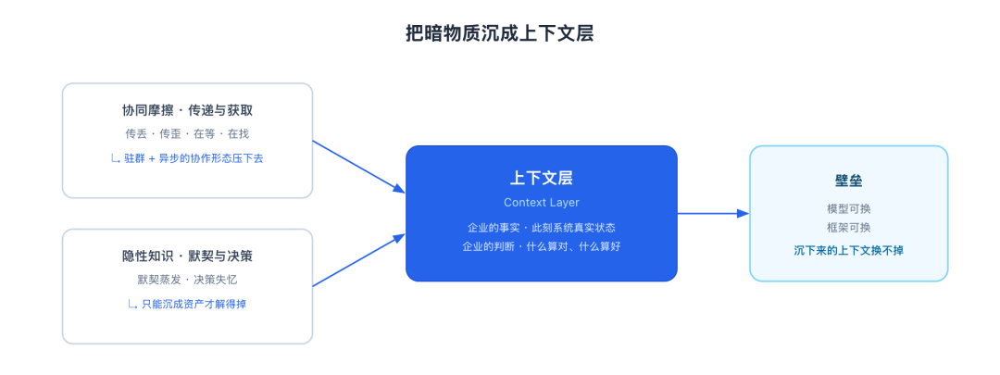
协同摩擦靠形态压缩，隐性知识靠沉淀补上——都汇进上下文层
▐ 7.1 为什么是上下文层：事实与判断，预训练不进模型
外部同行也走到同一判断：Atlan、Glean、ServiceNow 都指向这层"上下文层（Context Layer）"，Glean 的 ARR 从 1 亿美元涨到 3 亿只用了 15 个月。模型可换、框架可换，企业自己沉下来的上下文换不掉。模型内化不了你企业的事实（此刻系统的真实状态）和判断（什么算对、什么算好），这两样只能自己沉；Agent 层的能力长期看会趋同，业务资产的纵深不会。两类资产还互相喂养：agent 因知识缺口去找人，答案沉回知识资产，下次同类缺口就不再打扰任何人。找人的频率，本身就是知识资产缺口的度量；答疑类打扰应该越来越少，拍板类永远留给人。
▐ 7.2 上下文层长什么样：知识、能力、过程、协作
数字员工围绕这两条主线建设：业务侧把群里散落的讨论、决策、规则沉成业务域资产，越用越厚；工程侧深绑天猫前后端研发方式，做丝滑的端到端链路（工程实现是实践篇的正题）。资产侧的供给链已经定型：底座是研发副产物（研发工单系统中的需求记录、PRD、代码、群聊、审批记录），干活自然留下、零人工录入；经过编译、封装、索引、图谱化，加工成可直接消费的心智资产；agent 每次推理时动态组装：知识装进 instructions 与 knowledge，能力挂成 tools，过程判例检索成 memory 片段；组装用完即弃，资产本体持续累积：
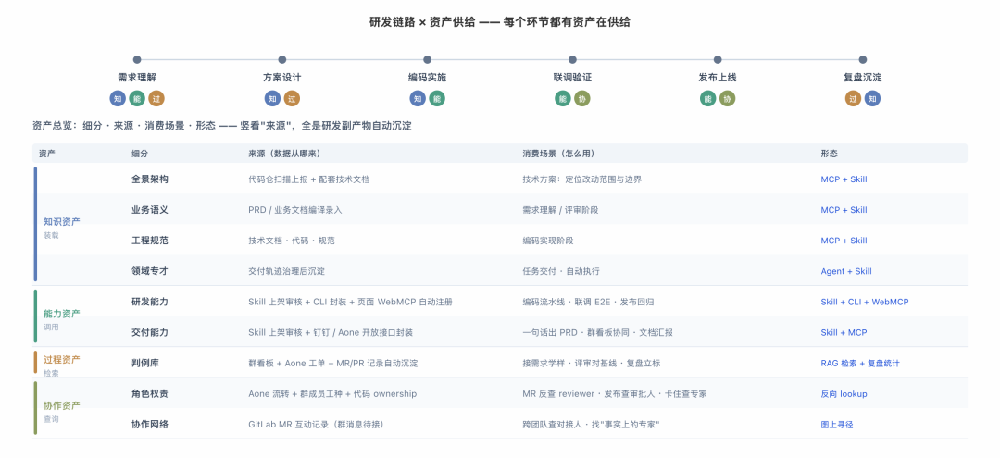
每个环节都有资产在供给；竖看来源，全是研发副产物的自动沉淀
这四个维度不是架构图上的框，控制台里每一维都点得开、查得到：页面连着功能、功能连着实体，概念挂着词条、人挂着证据。先看实物，再逐一说它们怎么用：
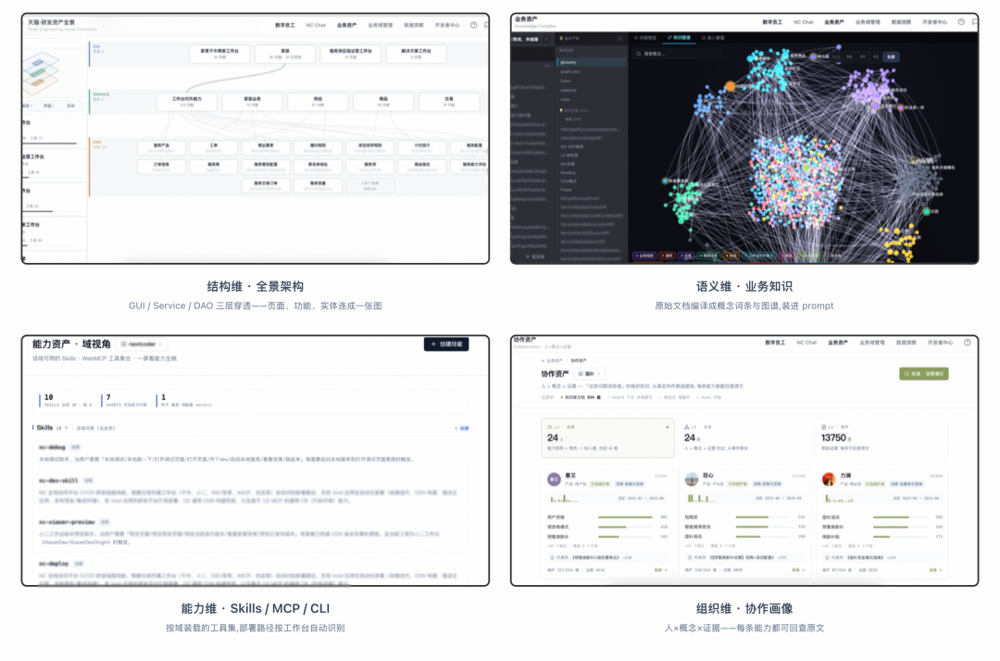
四个维度都已是控制台里的实物：结构 · 语义 · 能力 · 组织
知识：装载，让 AI 看懂业务
回答"这是什么、在哪、怎么回事"。以全景架构为骨架：页面、功能、实体连成 GUI/Service/DAO 三层穿透的一张图；业务语义编译成概念词条与图谱，术语、规则、口径都挂在词条上。进入一个业务域时按域装载进 prompt，AI 先看懂业务再动手。缺了它，写出来的是语法对、业务错的代码。
能力：调用，让它动得了手
回答"我手里有什么工具能用"。按产出物分两类：研发能力管代码（编码、部署、测试、页面操作），交付能力管非代码交付物（PRD、文档、表格、群看板）。载体是 Skills、MCP 工具和 CLI，按域装载，部署路径按仓库所属工作台自动识别。缺了它，AI 只能看不能动，退化成高级检索。
过程：检索，让它有样可学
回答"类似需求怎么做的、这类单的基线是什么"。判例库按需求聚合群看板轨迹、工单与 MR 记录；接需求时检索类似判例当样板，评审估期对着同类基线给区间，复盘再把跨需求的共性归纳成 SOP 与门禁。交付标准不是开会定出来的，是从真实轨迹里归纳出来的。缺了它，每次都从头试错，永远像新人。
协作：查询，让它找得对人
回答"该找谁批、找谁问、找谁 review"。它就是"agent 找人"那条升级决策链背后的资产形态：提 MR 反查 reviewer、发布前查审批人、卡住时查域内专家，每条推荐都挂着可回查的原文证据。
四种消费模式对称：装载、调用、检索、查询——缺哪块，AI 在那个维度就退化；全托管交付的天花板，由这四类资产的厚度共同决定。
资产的生产、存储、治理与开放策略留到资产篇完整展开；交付系统如何实现、业务如何接入、身份权限如何守住边界，则由实践篇继续回答。
▐ 7.3 生效验证：同样的问题，另一个结局
沉下来之后是什么体验？先看两条真实记录。
第一条，"找"的另一个结局：一张零业务信息的表单截图，问"这个表格加一列改哪个仓库"，几秒命中目标仓库。它凭的不是运气，是全景资产里那张提前连好的图——每个页面都连着访问路径、注册工具、服务实体和 Git 仓库：
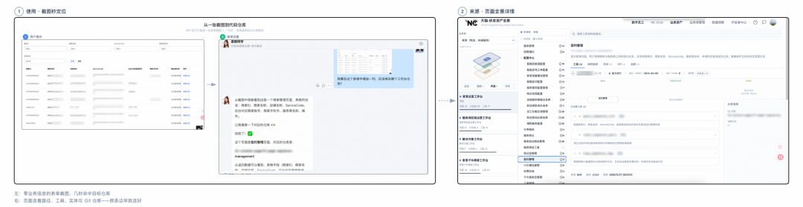
左：零业务信息的截图秒定位；右：页面到仓库的那条边，早就连在全景资产里
第二条，"为什么"沉下来的样子：问一句"什么是坑距地图"，定义、能力、相关概念一次给全，每段都有知识库出处；它的底层是长成词条的概念页——定义、业务规则、上线口径可回查，多个来源口径打架时自动标出（置信度标为"原文有歧义"），留给人裁定。当年"为什么这么定"，从口头约定变成了可回查、可纠错的词条：
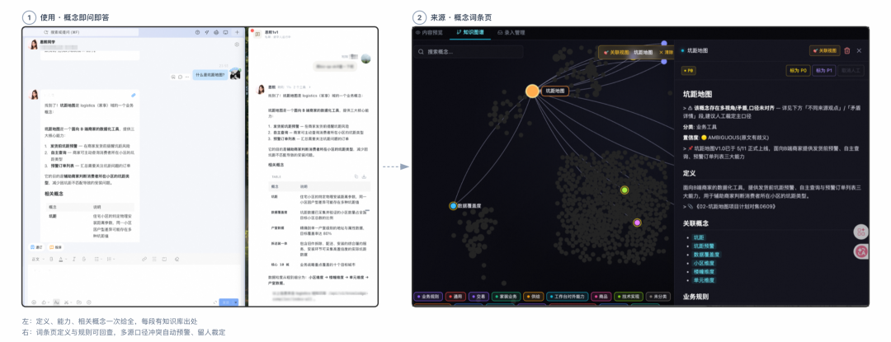
左：概念即问即答，每段有出处；右：底层词条——"为什么"第一次有了载体
有了这两条实录，剩下两笔账的结局就是可推的：那场"5 张限制"的考古，新人再提出放宽时，数字员工把来龙去脉端出来（两年前为同步审核链路而设、如今审核已异步），人带着完整背景做决定，不用先回滚一次才想起考古；那两条消息的"老三样"，被归档成判例后，新同学接手时直接端出"配置开关＋商家白名单＋晚高峰后发"，默契不再随人走。
四种摩擦至此各有归处：传递与获取，收在协作形态里；默契与决策，沉在资产里。那六笔账，笔笔有了下文。
走向 AI Native 组织：
协作被重新路由，资产不再蒸发
最后把镜头拉远一点。协作机制里的很多设计——层级、职能、流程——都在解决同一件事：单人的沟通带宽有限，信息只能一跳一跳传到该干活的人手里。传递、获取、默契、决策这四种摩擦，不是谁的失误，是这种逐跳传递的固有损耗。数字员工改变的正是这件事：当它持有全量上下文、把合适的问题路由给合适的人，任务的流转就不必再沿层级逐跳走。协作那一半的终点，是异步化的大规模协作：agent 大规模并行推进，人只在判断力时刻出现。
资产那一半的终点，是组织第一次拥有不随人事变动蒸发的自我认知。谁懂什么、为什么这么定、这类活怎么干，过去写在人脑里、随离职清零，现在沉在上下文层里、随交付增厚。快手那场 GIAC 分享，其实还点过第三样 AI 内化不了的东西：责任。闯了祸，兜底的永远是人。事实沉进资产、判断留给被路由到的人、责任由人兜底，这三条边界画出的正是未来组织里人的位置：从流程的串联者，变成判断力的供给方、隐性经验的翻译者，把只有自己知道的事，变成整个组织消费得起的资产。
这也是我们把宝押在协作与资产上的原因：模型每半年换代、工具每月迭代，这两样却越早沉淀越厚、越晚动手越贵。内部定改造顺位时我们用一个思想实验：假设全链路每个节点的产出都必须由 AI 完成，推不动的地方，就是暗物质最厚、最该先动的地方。建数字员工的过程，本身就是一次协同体检。暗物质不会自己消失，但它开始可以被看见、被沉淀；看得见它的团队和看不见它的团队，会在同一套模型、同一套工具上，跑出完全不同的组织。
AI 让组织更强；好的组织进化，也让人的洞察、远见与温度，充分生长。
团队介绍
本文作者珈文，来自淘天集团-天猫品牌行业前端团队。我们团队负责消费电子、3C数码、运动、家装、汽车、奢品、服务等多个行业的项目。我们定位自身不局限于“传统”的前端团队，在AI、3D、工程化、中后台等领域，我们有着持续的探索和实践。
¤ 拓展阅读 ¤
归属：[[02-输入/按主题/AI与效率/_index|AI与效率]]